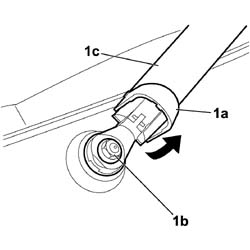

5050C34 REAR WIPER ARM WITH BLADE - R+R
- Path
- Procedures > 50 AUXILIARY UNITS > 5050 SCREEN WASHERS AND HEADLAMP WASH/WIPE > 5050C REARSCREEN WASH/WIPE > 5050C34 REAR WIPER ARM WITH BLADE - R+R
- Kind
- repair procedure (removal / refitting; the operation number is the code)
- Applies to
- all engines; all production periods
- Interactive page
- https://sloeber94.github.io/elrnDB-fCrm/en/#/194000656
Applies to: all engines; all production periods
 Removing
Removing
 Refitting
Refitting1. Lift up the cover (1a), undo the fixing nut (1b) and remove the wiper arm (1c) complete with windscreen wiper blade.

Applies to: all engines; all production periods
Refitting
Removing- Check that the windscreen wiper arm and the blade are not damaged.
- Positin the wiper arm in its housing so that it does not touch the windscreen seal in the rest position.
- Tighten the fixing nut and close the cover.
- Check that the wiper arm is working properly.